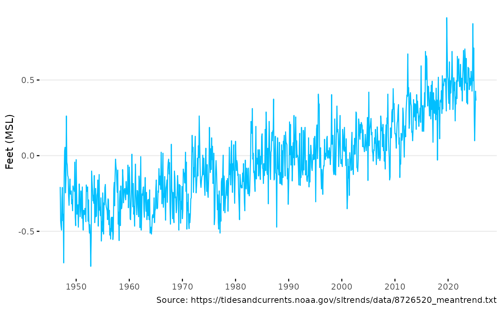

Plot sea level data
Usage
plot_sealevel(
dat,
col = "deepskyblue",
units = "ft",
caption = TRUE,
xrng = NULL,
xbrk = 10,
yrng = c(-1, 1),
ybrk = 0.5
)Arguments
- dat
Input data from
get_sealevel().- col
character, color for the line. Default is
'deepskyblue'.- units
character, units for the y-axis. Default is
'ft'. Options are'ft'and'm'.- caption
logical, add caption with source. Default is
TRUE.- xrng
Date, x-axis range. Default is
NULL, which uses the range of the data.- xbrk
numeric, x-axis breaks. Default is
10.- yrng
numeric, y-axis range. Default is
c(-1, 1).- ybrk
numeric, y-axis breaks. Default is
0.5.
Examples
dat <- get_sealevel()
plot_sealevel(dat)
